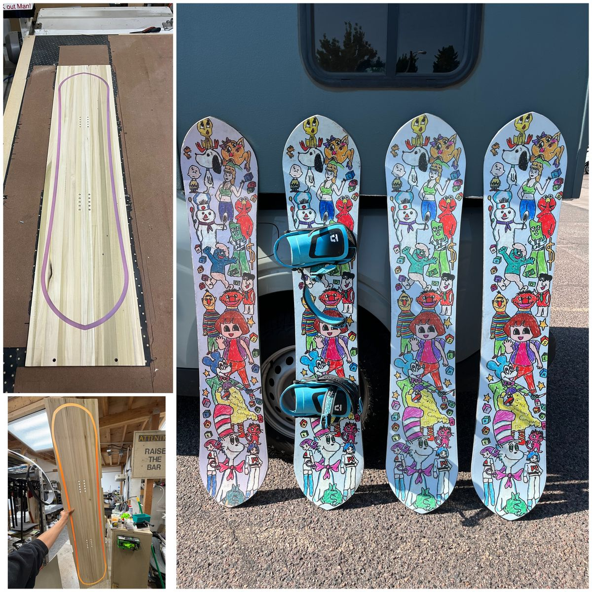
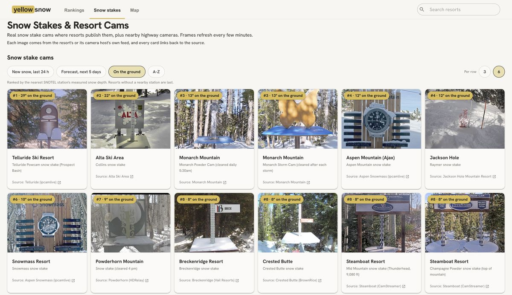
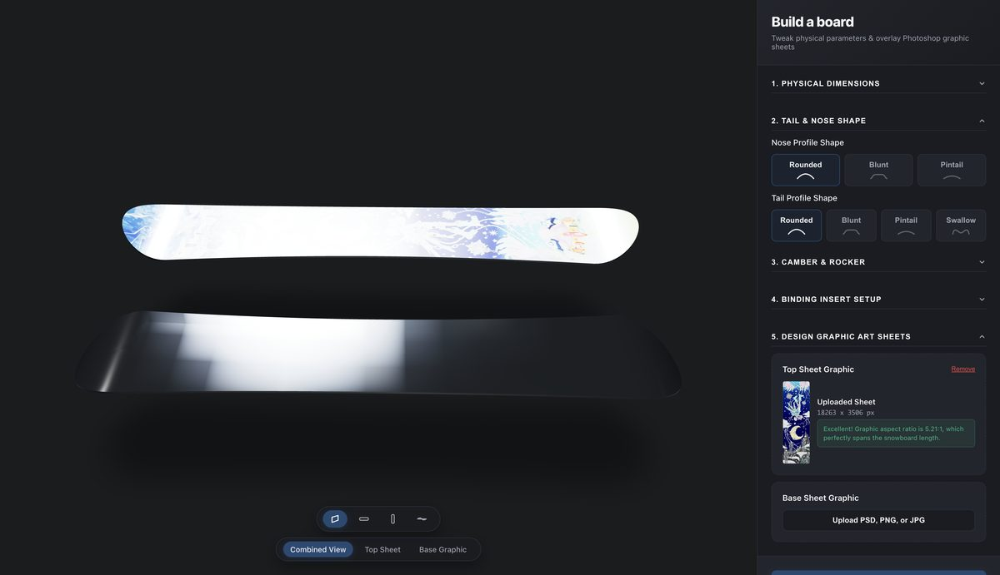
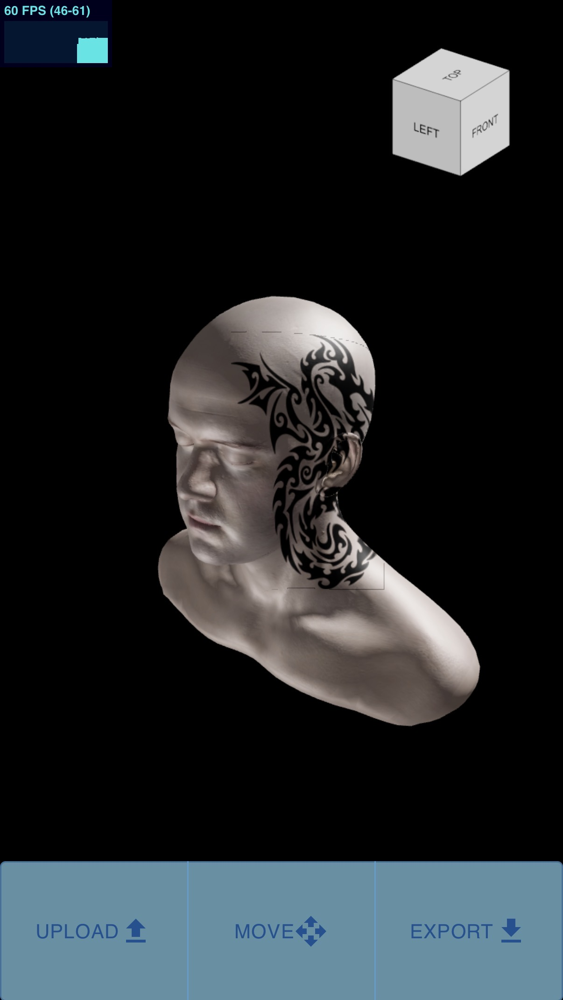
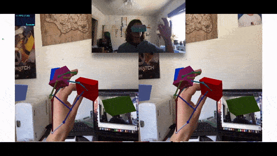
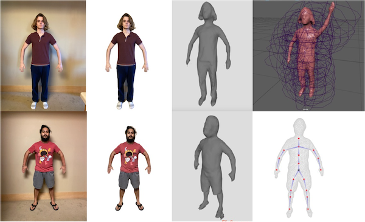
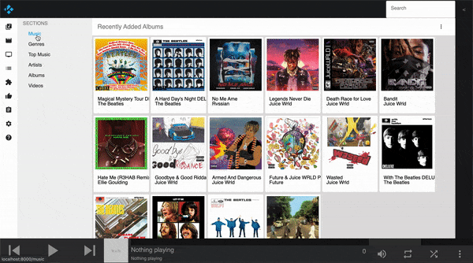
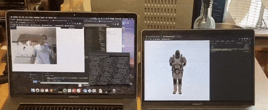

Hey there, my name is Alex! I love building things; I make snowboards in Denver and I have a 1973 MG Midget which I love working on (most of the time). Currently, I am a Senior Software Engineer at Alteryx.
-

Crash Snowboards is a tiny snowboard company/factory I run in Denver where I hand make snowboards. No manufacturers or investors, just grassroots board building. We give boards away at local jams every year; otherwise catch us at Ruby Hill.
-

yellowsnow.app is a free, ad-free ski snow forecast I built. It ranks 259 resorts by forecast snowfall from five weather models at once, shows live snow stake cams using a CRON job scraper and SNOTEL depths next to the forecast, and has a terrain map with radar and avalanche layers. Built with React, TypeScript and MapLibre.
-

Build A Board is a custom snowboard designer built with TypeScript, react-three-fiber and Three.js. It helps people picture their board before reaching out, and checks that topsheet and base graphics actually fit (the most common mistake).
-

Tattoo projection lets you upload an image and project it onto 3D body models to see how a tattoo wraps. Procreate shipped a very similar feature soon after, which made mine obsolete :).
-

Vision is a 3D printed, Cardboard-style headset for smartphone passthrough AR, using MediaPipe and TensorFlow for hand tracking and Three.js for rendering. The goal: a cheap HoloLens from a phone, a printed part and computer vision. [repo]
-

Rigme.io (now dead x/), made with my friend Jas, turned a webcam photo into an emailed, rigged 3D model of you using PIFuHD and Blender.
-

elm-chorus is a new Kodi web interface in Elm, written during Google Summer of Code 2020 with my mentor Razzee. Live playback and media organization over WebSockets via JSON-RPC. [reflection]
-

posenetToThreejs connects TensorFlow.js PoseNet to a Three.js humanoid over Socket.IO, so you can puppet the rig with your body. 2020.
older
- Transpos: iOS app in Swift that recognized images and placed matching 3D models over them, using Firebase and ARKit. With Jas, 2019.
- PyBioNetFit: part of a three-person team building a model-fitting tool in C++ and Python; wrote parts of the BNGL parser and the PyQt 5 GUI.
- IgE Receptor Signaling: a BioNetGen model of the mast cell allergy cascade, fit to experimental data with BioNetFit. ISEF 2016 and 2017.
- Refreshable Braille Display: single-character display driven by memory wire and an Arduino. 2015.
- Headtracking: control your mouse with your head using a Wiimote and IR LED safety glasses. 2013.
- 3D modeling / animation work
publications
- Mitra, E. D., Suderman, R., Colvin, J., Ionkov, A., Hu, A., Sauro, H. M., Posner, R. G., Hlavacek, W. S. (2019). PyBioNetFit and the Biological Property Specification Language. iScience, 19, 1012–1036.
- Hlavacek, W. S., Csicsery-Ronay, J. A., Baker, L. R., Álamo, M. D. C. R., Ionkov, A., Mitra, E. D., … Thomas, B. R. (2019). A step-by-step guide to using BioNetFit. In Modeling Biomolecular Site Dynamics (pp. 391–419). Humana Press.
- Mitra, E., Suderman, R., Ionkov, A., Hlavacek, W. (2018). PyBioNetFit. Los Alamos National Lab.